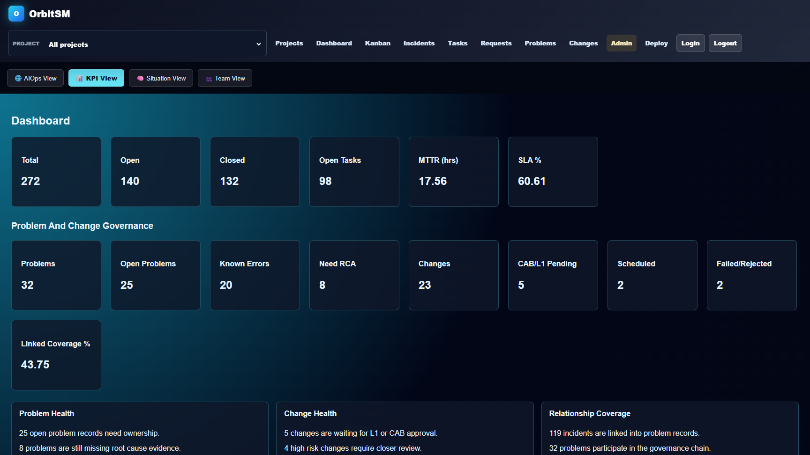
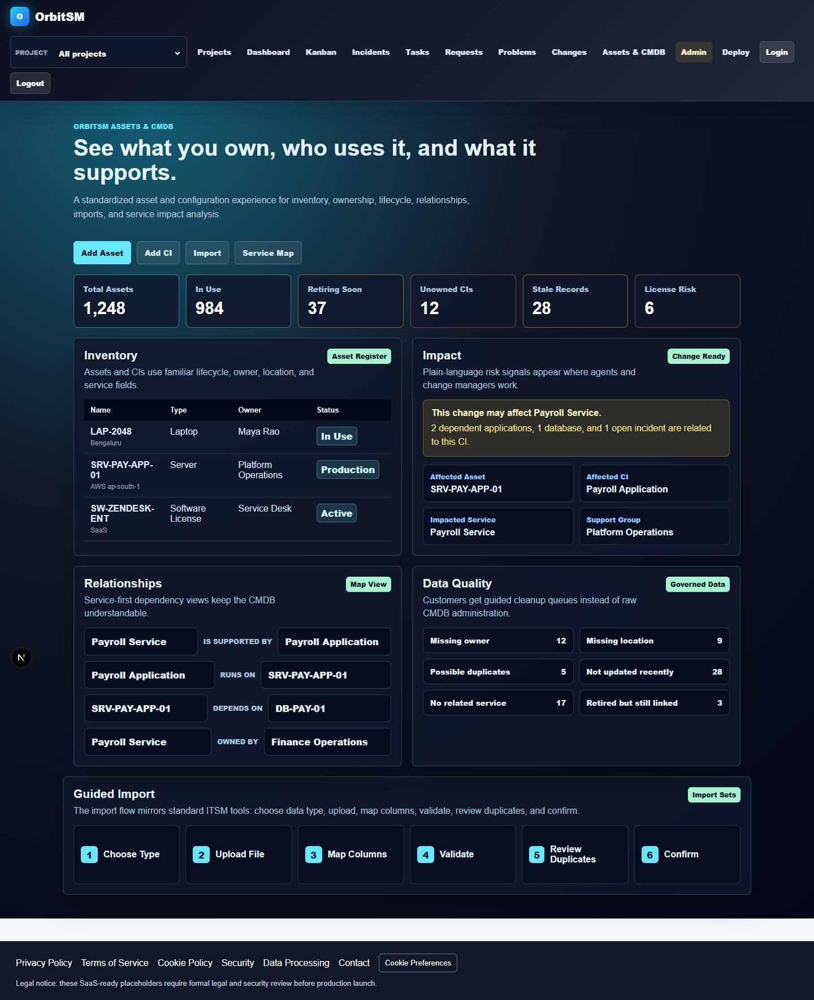
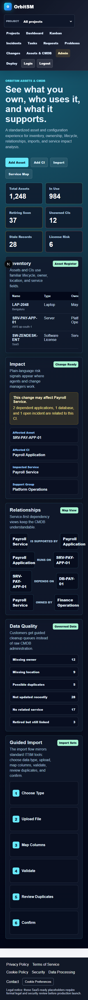
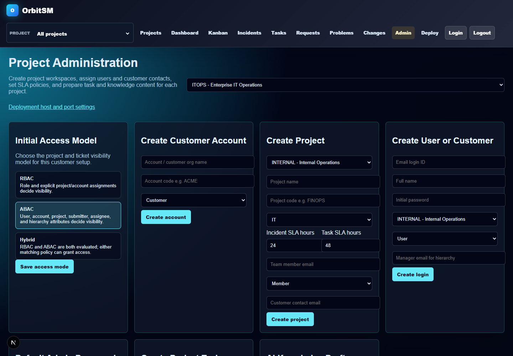
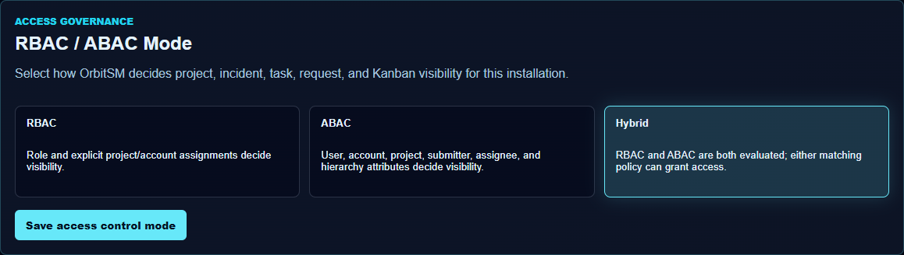
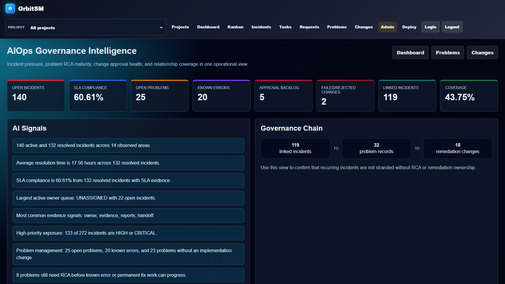
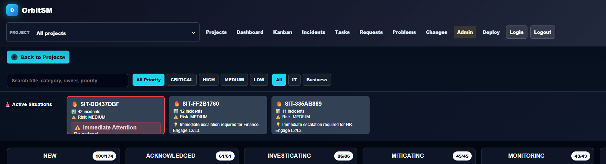
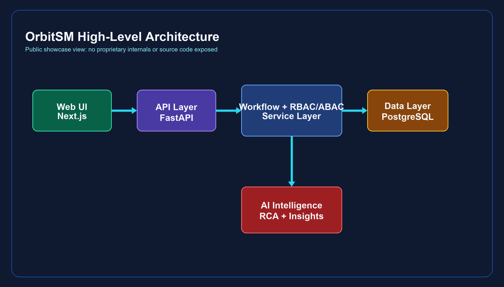
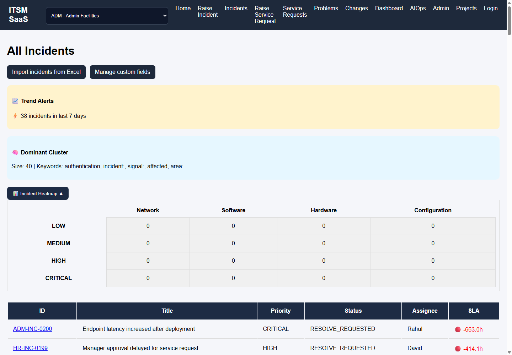
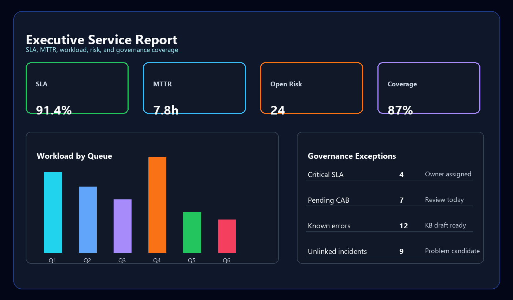

AI-enabled IT Service Management for project-aware incident operations, standardized Assets & CMDB, SLA governance, service health dashboards, AI-assisted RCA, situation intelligence, RBAC/ABAC access control, problem management, and change management.

A public-safe narrated demo covering project-aware operations, dashboards, Kanban, situation intelligence, incidents, tasks, AI-assisted RCA, RBAC/ABAC governance, admin configuration, and hardened deployment patterns.
Project-aware incidents with SLA tracking, assignment, lifecycle movement, attachments, and AI triage signals.
Operational intelligence for root cause analysis, similar incident discovery, service risk, and knowledge generation.
Pattern-aware grouping that turns isolated tickets into active operational situations and trend signals.
Executive and operational views across SLA, MTTR, backlog, workload, governance exceptions, and service pressure.
Structured RCA, known error, workaround, change approval, scheduling, rollback planning, and closure evidence.
Customer-friendly inventory, ownership, lifecycle, guided import, data-quality queues, dependency relationships, and service-impact views.
Workflow movement, project reassignment, notifications, audit events, Kanban execution, and admin-managed configuration.
The OrbitSM Assets & CMDB experience uses familiar ITSM patterns: asset register, configuration items, ownership, lifecycle state, linked services, relationship maps, guided imports, and data quality queues. Quick actions open draft asset/CI forms, switch into the complete 1,248-record inventory, export all 1,248 rows as CSV, or take users directly to import and service-map views.


OrbitSM supports role-based access, attribute-based access, and hybrid evaluation for realistic enterprise and customer operating models. Visibility can account for role, account, project membership, requester, submitter, assignee, customer contact, and manager hierarchy.




OrbitSM is represented here as a public-safe showcase: Next.js frontend, FastAPI backend, PostgreSQL persistence, Gunicorn/Uvicorn runtime, Nginx reverse proxy, HTTPS edge, backend-only secrets, and Docker-based deployment patterns.



Safe for public sharing: this repository contains product documentation, screenshots, diagrams, roadmap content, and sample payloads. It intentionally excludes proprietary source code, Docker image layers, database migrations, environment files, credentials, AI prompts, secrets, and commercial implementation details.